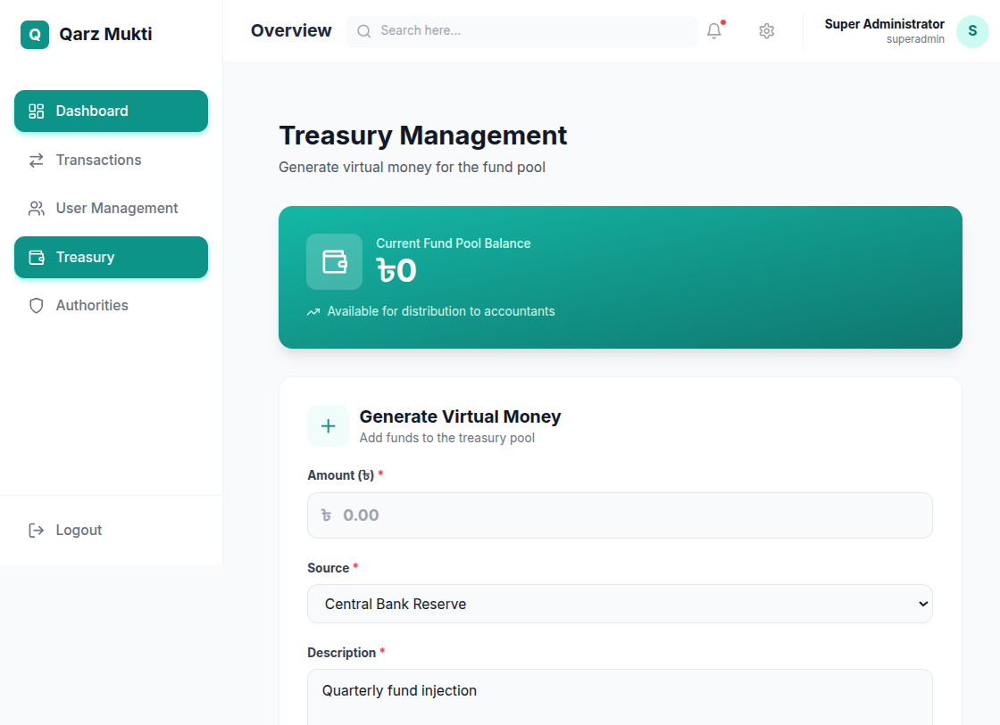

A core-banking engine for micro-lending: borrower onboarding with KYC, loan origination, treasury fund management, and a repayment engine that handles real-world partial and advance payments — with role-based dashboards for every actor.


- Payment allocation: deficit carry-forward & proportional advance distribution
- JWT auth + granular RBAC (4 roles, authority-level permissions)
- Interest-rate governance with full audit trail
- 15 unit tests on money-critical logic · CI green
- One-command setup: Docker Compose (API + SPA + Postgres)
- Idempotent payment transactions & reconciliation
Java 21Spring Boot 4Spring SecurityPostgreSQLFlywayReact 18TypeScriptTailwindDockerGitHub Actions